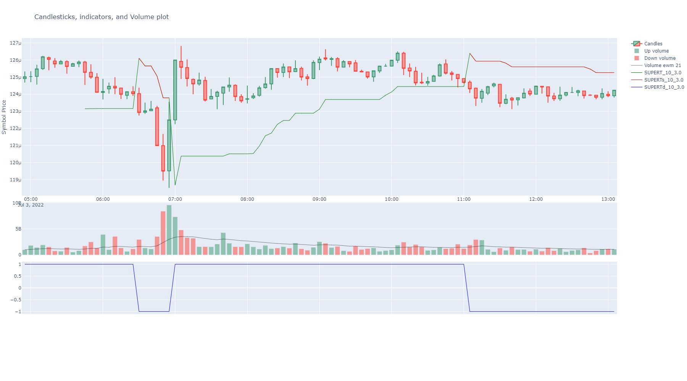

Welcome to BinPan’s documentation!¶
BinPan is a Python wrapper for the Binance API oriented towards market data analysis: candlestick (kline) data, trades, technical indicators, plotting, and strategy backtesting.
Requires Python >= 3.12. Published on PyPI under the MIT license.
Features¶
Fetch candlestick (OHLCV) data with timezone and indexing options.
Fetch atomic and aggregated trades.
Native technical indicators (EMA, SMA, RSI, MACD, Bollinger Bands, Supertrend, Ichimoku, VWAP, Stochastic, fractals, and more).
Interactive candlestick charts with Plotly: indicators, buy/sell markers, trade bubble charts, order book, market profile.
Support and resistance detection via K-Means clustering (static, rolling, discrete interval).
Strategy tagging and backtesting engine with stop loss, target, entry filters, and ROI/profit metrics.
Exchange metadata: order types, filters, fees, coin networks, 24h volume ranking.
CSV export/import for klines and trades.
PostgreSQL/TimescaleDB integration for historical data storage.
Heikin-Ashi candles, reversal charts from tick data, kline resampling.

Note
BinPan contains no Binance order method, withdraw method or any dangerous command.
If you decide to add API keys for account methods, credentials are managed by panzer
(encrypted in ~/.panzer_creds); it is recommended not to enable trading capability in
your Binance API key configuration.
Be careful out there!
Installation¶
pip install binpan
Quick Start¶
import binpan
btcusdt = binpan.Symbol(symbol='btcusdt',
tick_interval='15m',
time_zone='Europe/Madrid',
limit=200)
btcusdt.ema(21)
btcusdt.supertrend()
btcusdt.plot()
{kind=link}

Example Notebooks¶
The notebooks/ folder contains Jupyter Notebooks organized by topic:
# |
Notebook |
Topic |
|---|---|---|
01 |
basic_tutorial |
Getting started: data, indicators, plots, trades |
02 |
data_analysis |
Analysis: indicators, trades, market profile, order book |
03 |
technical_indicators |
Full indicator catalogue |
04 |
plotting |
All visualization capabilities |
05 |
reversal_charts |
Reversal candles from atomic trades |
06 |
tagging_and_backtesting |
Strategy signals and backtesting |
07 |
support_resistance_kmeans |
S/R with K-Means clustering |
08-10 |
ichimoku_* |
Ichimoku analysis and backtesting |
11 |
exchange_info |
Exchange class: metadata, filters, fees |
12 |
export_csv |
CSV export/import |
13-15 |
database_* |
PostgreSQL/TimescaleDB integration |
16 |
parallel_requests |
Bulk/parallel data fetching |
17 |
credentials_and_panzer |
API credentials and panzer secret management |
18 |
wallet_tests |
Wallet class tests (run without API keys) |
GitHub repo¶
Google Colab¶
Google Colab is not available for the Binance API due to IP restrictions.
Jupyter Import Troubleshooting¶
If you encounter import errors in Jupyter, install packages directly to the kernel:
import sys
!{sys.executable} -m pip install binpan
Main Classes:
API & Market:
Analysis:
Core:
Plotting:
Storage & Database: